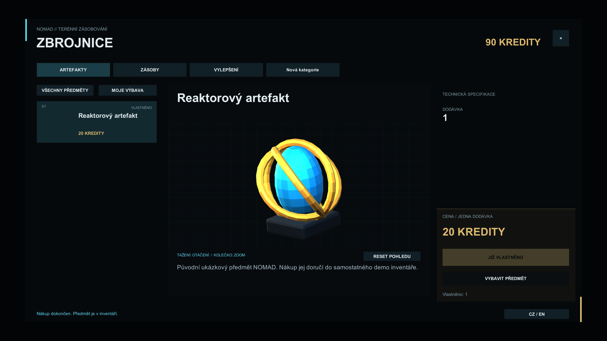

Instalace a kontrola závislostí — RC.4
RYCHLÝ START — VÁŠ PRVNÍ OBCHOD
NOMAD Shop Core 0.2.0-rc.4 · Cílem je přibližně deset minut po přípravě Unity a potřebných balíčků. Import a kompilace shaderů mohou trvat různě dlouho; nejde o záruku času.
1. Příprava a import
Použijte URP projekt. Otestovaná kombinace je Unity 6000.6.3f1, Universal RP 17.6.0, Input System 1.20.0 a Unity UI 2.6.0. Jiné kombinace nebyly certifikovány. Balíčky zkontrolujte v Window > Package Management > Package Manager. V Edit > Project Settings > Player > Other Settings nastavte Active Input Handling na Input System Package (New) nebo Both a případně povolte restart Unity. Mění se nastavení vstupů vašeho projektu: zachovejte kompatibilitu s ostatními systémy.
Vyberte Assets > Import Package > Custom Package a dodaný .unitypackage. Prohlédněte seznam: produkt patří pod Assets/NomadShop. Proveďte import, počkejte na překlad a před pokračováním vyřešte chyby v Console. Přiložený package.json zaznamenává závislosti, ale import custom package nenahrazuje kontrolu Package Manageru.
2. První nákup v dodaném demu
Otevřete Assets/NomadShop/Demos/Scenes/NomadShop_Demo.unity a spusťte Play Mode. Obchod se otevře anglicky se 110 kredity. Vyberte Reactor artifact v ARTIFACTS a stiskněte BUY ITEM: zůstatek klesne na 90, vlastnictví bude 1 a objeví se potvrzení. Jde o skutečnou transakci v dočasném demo inventáři. Vyzkoušejte EN / CZ, šikmé tažení modelu, uvolnění, kolečko a RESET POHLEDU. ESC zavírá, F znovu otevírá. Ukončením Play Mode se demo nákupy resetují.

3. Vlastní katalog
Mimo Play Mode otevřete Tools > NOMAD > Shop Editor. Pro shodu s níže uvedenými názvy nechte přepínač českého editoru vypnutý. Klikněte na Create independent catalog, zvolte Assets/MyShop/MyCatalog.asset (případně vytvořte MyShop) a uložte. Nenahrazujte dodaný katalog. Vygenerovaná ID neměňte. Currency ID ponechte credits, Default Language en a pro Preview Layer vyhraďte nepoužitou vrstvu 31 (pokud ji hra používá, zvolte jinou volnou).
Klikněte na + Add category. Rozbalte definici vybrané kategorie (záhlaví s jejím ID, případně Element) a Name. Pro en napište Supplies, pro cs napište Zásoby. Visible ponechte zapnuté. Klikněte na + Add item. Rozbalte definici (záhlaví s ID, případně Element) a Name; vyplňte My flask / Moje láhev. Nastavte Price 20, Quantity 1, Available zapnuté, Max Purchases 1, Stock -1. V Assign category zvolte Supplies. Rozbalte Preview a z Project přetáhněte Assets/NomadShop/Demos/Prefabs/Nomad_FieldFlask.prefab do Prefab. Tento vlastní model z balíčku je bezpečná první ukázka; později použijte svůj licencovaný prefab. Ostatní nastavení náhledu ponechte.
Do Localization katalogu přiřaďte Assets/NomadShop/Demos/NomadUILocalization.asset. Klikněte na Validate catalog: očekávejte Catalog valid. Potvrďte OK a Save catalog. Názvy a cena zůstanou i po znovuotevření. Validace kontroluje ID, kategorii a kladnou cenu/množství; netestuje herní adaptér.
4. Demo peněženka bez změny původního dema
Otevřete dodané demo, použijte File > Save As a uložte kopii jako Assets/MyShop/MyFirstShop.unity. V Hierarchy vyberte NOMAD independent demo. Do Catalog komponenty NomadDemo přetáhněte MyCatalog. Ponechte Starting Balance 110, Capacity 12 a Open At Start zapnuté. Kopii uložte. Nepřidávejte druhý NomadDemo ani konkurenční EventSystem. Pokud potřebné objekty chybí, demo vytvoří kameru pozadí a InputSystemUIInputModule.
Spusťte Play. Vyberte Supplies a My flask. Ověřte model, cenu 20 kreditů a nákup BUY ITEM: 110 klesne na 90, vlastnictví bude 1. Přepněte EN/CZ: název kategorie i předmětu se přeloží. Vyzkoušejte tažení, kolečko a reset. ESC obchod zavře, F otevře; vlastnictví v této relaci zůstává. Po zastavení Play se demo resetuje. Katalog upravujte a ukládejte mimo Play Mode.
5. Další krok
V návodu editoru jsou všechna pole, v integraci napojení skutečné peněženky, inventáře, interakce NPC a blokování vstupů. NomadDemo je ukázka, ne druhá peněženka vedle vaší produkční ekonomiky. Obrázkový návod ukazuje skutečné ovládání.